Muon physics validation¶
This page focuses on validating the physics of muons in remage, with a particular emphasis on muon-induced neutron production and its relevance for cosmogenic backgrounds in LEGEND.
Introduction¶
Atmospheric muons are a relevant background source for underground low-background experiments. For LEGEND at the Gran Sasso underground laboratory, two classes of muon-induced backgrounds are important: prompt backgrounds from direct energy deposition by muons and their secondaries, and delayed backgrounds from radioactive isotopes produced in muon-induced showers.
For delayed backgrounds in LEGEND, one of the most relevant isotopes is \(^{77}\)Ge, produced via neutron capture on \(^{76}\)Ge, \(^{76}\mathrm{Ge}(n,\gamma){}^{77}\mathrm{Ge}\) [1] [2] [3]. In particular, its isomeric state at 160 keV, \(^{77\mathrm{m}}\mathrm{Ge}\), is a concern for LEGEND-1000 because it likely decays as a pure beta emitter, mimicking the neutrinoless double-beta decay signal. To suppress it, delayed-tagging mechanisms have been developed to identify the production of \(^{77\mathrm{m}}\mathrm{Ge}\), though this requires a robust understanding of muon-induced neutron production and transport in the simulation.
To model muons, one first has to understand their initial energy distribution. At sea level, the muon spectrum is commonly described by the Gaisser parameterization [4], while underground spectra are typically obtained by propagating muons through rock with tools such as MUSIC/MUSUN [5]. This leads to a broad underground spectrum, which motivates testing across wide energy intervals. At Gran Sasso, muon energies range from tens of GeV to several TeV with an average around 273 GeV. In addition, muons traverse different materials in the LEGEND setup, in particular rock, water, and liquid argon. A meaningful validation of muon physics in remage therefore has to cover both a broad energy range and multiple materials.
Warning
Limitations: These tests use simplified configurations, such as mono-energetic muons, idealized pure materials, reduced electron/gamma tracking thresholds (≈8 MeV), and limited statistics (≈20k events per configuration). They are intended to detect large discrepancies and assess model consistency (remage vs. FLUKA / literature), not to provide quantitative predictions of LEGEND’s in‑situ background rates. Interpret results comparatively. Do not extrapolate them to experimental backgrounds without a dedicated, site‑specific study.
Validation approach¶
Two separate setups are used in this validation: one for the energy-loss measurements (Section 1) and a second for neutron yield, isotope production and shower dimensions (Sections 2–4).
Energy-loss setup: mono-energetic muons are shot through a block of material. The block length is chosen such that the muon loses about 5% of its initial energy (this keeps the effective energy-averaging window small while providing sufficient statistics for the mean loss measurement).
Neutron/isotope/shower setup: mono-energetic muons are shot through a cylinder of material with length \(2000\,g/cm^2\\cdot\\rho\) and radius 1.25 m (chosen for containment). Electrons and gammas are tracked down to the lowest neutron separation energy in the material (slightly below 10 MeV in these setups). Each configuration is limited to ≈20k events due to computational cost. This test setups were designed to be as close as possible to the setup in [6], which provides a useful baseline for cross-version consistency checks.
This validation page focuses on four observables. For prompt backgrounds, the key observable is the mean muon energy loss (1) in matter, compared to PDG reference tables [7]. For delayed backgrounds, the key observable is the muon-induced neutron yield (2), compared to both parameterizations and previous simulations [8] [9] [10] [6]. In addition, the individual contribution from different production channels and the multiplicity of neutrons per interaction. This allows for more meanigful comparison between different physics lists or simulation frameworks. Furthermore, the production of radioactive isotopes in the shower (3) is of interest to understand the contribution from not only neutron capture but also from spallation processes, which usually have high systematic uncertainties. Finally, the development of the shower profile as a function of penetration depth (4) allows for a cross-check of the whole muon shower physics and to identify general issues in the physics model.
In addition, the Neutron/isotope/shower setup also were used to generate reference FLUKA simulations (v4.5.1) for comparison. The workflow for these FLUKA simulations can be found, [here] and uses the following physics settings: PRECISIO, PHOTONUC, EVAPORAT, COALESCE, EM-DISSO, IONTRANS and JEFF-3.3 for neutron cross-sections. FLUKA is a well-studied Monte Carlo simulation tool for hadronic interactions and is widely adopted to estimate production of particles.
Finally, whenever possible, the generated observables are also compared to literature experimental measurements and to reference simulations from Geant4 and FLUKA.
1.) Energy loss of muons in matter¶
The energy loss of muons in matter consists of four main processes: ionization, bremsstrahlung, pair production, and photonuclear interactions. Ionization is a continuous process and dominates at lower energies, while the latter three are stochastic and become increasingly relevant at higher energies. In water and liquid argon, the transition between the two regimes is around 100 GeV.
In Geant4, ionization is implemented using three different models according to the energy of the muon [Muon Ionisation], while the other three processes are implemented using ultrarelativistic approximation models [Muon Bremsstrahlung], [Muon Pair Production], [Muon Photonuclear Interaction].
The mean energy loss from the individual processes is tabulated in the PDG [7], and the total energy loss is given by their sum. At high energies, event-by-event energy loss fluctuations are large because stochastic processes dominate. A full reconstruction of single-muon loss spectra (energy straggling) and a clean decomposition of process-by-process contributions would be interesting, but are complex to model and beyond the scope of this validation.
The plots below show the mean energy loss of muons in water and liquid argon as a function of the muon energy. The simulation estimates were generated by shooting mono-energetic muons through a block of material, with the block length chosen such that the muon loses about 5% of its initial energy. The simulated mean values are then compared to the tabulated PDG expectation. Agreement should be good over the full energy range.
{kind=link}
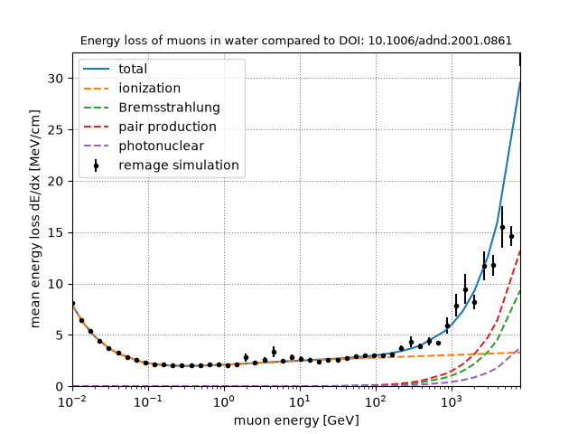
Figure: Energy loss of muons in water compared to DOI: 10.1006/adnd.2001.0861
{kind=link}
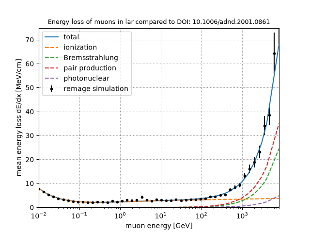
Figure: Energy loss of muons in liquid argon compared to DOI: 10.1006/adnd.2001.0861
2.) Muon induced neutron yield¶
The muon-induced neutron yield is one the most relevant observables to validate the delayed cosmogenic backgrounds in LEGEND, but it is also one of the most difficult to model robustly.
Following [8], the dominant neutron-production mechanisms are:
Muon spallation via virtual-photon exchange. This channel is a major source of theoretical uncertainty.
Muon elastic scattering on bound neutrons, summarized as \((\mu,\mu n)\).
Photonuclear reactions from electromagnetic showers, \((\gamma,Xn)\).
Secondary neutron multiplication following the primary channels, dominated by inelastic neutron reactions \((n,Xn)\).
In the following test, neutron yields are compared to three different types of references:
Experimental estimates from water based experiments such as Super-Kamiokande [11] and SNO+ [12].
Parameterizations based on experimental and simulation data from literature, such as [10], [8], [9], and [6].
Dedicated FLUKA simulations performed with the same geometry and physics settings as the remage simulations.
The experimental values are the most robust references, however, they are scarce since neutron-yield measurements require large detectors with good containment and high detection efficiency. Thus, such measurements are available for water and liquid scintillator, but (to the knowledge of the author) not for liquid argon at relevant muon energies. In addition, since the initial muon energy is not known in the relevant experiments, the neutron yield is associated with the average muon energy for the corresponding experiment.
Parameterizations of the neutron yield assume a power-law dependence on the muon energy \(E_\mu\) and the target material mass \(A\). A general parameterization based entirely on experimental data is given by [10] depending both \(E_\mu\) and \(A\), while material-specific parameterizations, i.e., only dependent on \(E_\mu\) generated for specific \(A\), based on FLUKA simulations [8], [9], as well as Geant4 simulations [6]. The matter-specific parameterizations are expected to be more accurate since they can better consider unique characteristics of the target such as the neutron separation energy and cross-sections.
Note
The Geant4 version (9.4) and G4NDL library (ENDF/B-V) used in [6] are outdated compared to current production versions. Deviations can be expected.
Since the FLUKA simulations used in [8] and [9] only covered water and liquid scintillator and are already quite dated, dedicated FLUKA simulations were performed for all test cases presented here to provide a more direct comparison.
In the simulation, mono-energetic muons are shot through a cylinder of material with a length of \(2000 g/cm^2 \cdot \rho\) similar to [6]. The radius was not reported in [6], but was chosen to be 1.25 m to ensure good containment of the resulting showers. The neutron yield is then calculated as the number of neutrons produced per muon per g/cm\(^2\) after the burn-in depth (see the shower dimensions section below).
The following tests are useful to identify large discrepancies between simulation and expectation.
Material dependence¶
The following plot shows the muon-induced neutron yield in different materials at 100 GeV. The agreement between the remage estimates, the FLUKA estimates and the material-specific expectation should be good for all materials, the generalized parameterization should give a rough estimate, though it is not expected to precisely match the simulated values. Especially, in rock remage is expected to result in a higher value compared to FLUKA.
{kind=link}
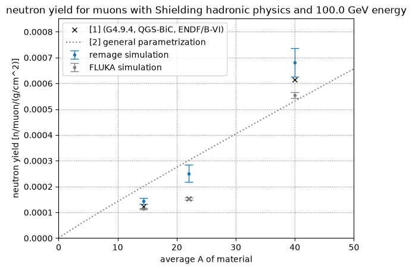
Figure: Muon induced neutron yield in different materials at 100 GeV. Compared to DOI: 10.1134/S106377881603011X
Energy dependence¶
As mentioned above, in underground experiments, the initial muon energy is not known and can vary up to several TeV. Instead, usually the neutron yield in experiments is associated with the average muon energy for the corresponding experiment. This is related to the overburden of the underground site resulting in Super-Kamiokande at about 2.7 km.w.e. having a lower mean energy of 259 GeV [11] compared to SNO+ with 364 GeV located at 6 km.w.e. [12].
The following plots show the muon-induced neutron yield at 100 GeV and 280 GeV (similar to [6]), the latter roughly corresponding to the mean muon energy at Gran Sasso.
The first plot compares the remage estimated value for water with the experimental values and parameterizations. The remage estimate should be consistent with the FLUKA estimate and the material-specific parameterization lines, the latter in turn should be consistent with measurements. Again, the generalized parameterization is expected to deviate significantly from the simulated values.
{kind=link}
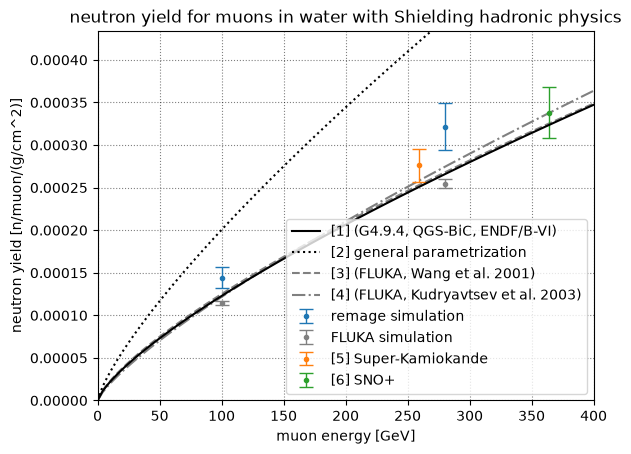
Figure: Muon induced neutron yield at different energies in water. Compared to DOI: 10.1134/S106377881603011X
The second plot compares the remage estimated value for liquid argon. Since only parameterizations from [6] and [10] are available, only these are shown. The remage estimate should be consistent with the [6] estimate and the FLUKA estimate, while lying above that of [10].
{kind=link}
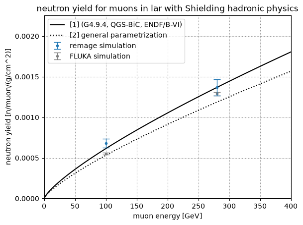
Figure: Muon induced neutron yield at different energies in liquid argon. Compared to DOI: 10.1134/S106377881603011X
Hadronic physics list¶
Geant4 offers different default hadronic physics lists using different models at different energy ranges. Depending on the model chosen, there might be differences in the resulting neutron yield. From previous estimates [3], differences in isotope production depending on the physics lists are \(<10\%\) with QGSP_BIC_HP expected to produce lower neutron yield.
In the following plot, the neutron yield for liquid argon at 100 GeV is compared for different hadronic physics lists, with Shielding being the default used so far. With the exposure simulated in this setup, no significant difference should be visible.
{kind=link}
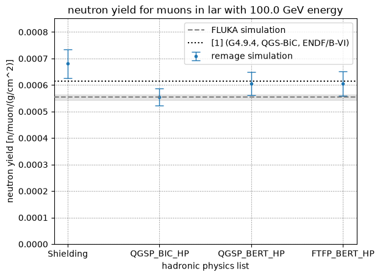
Figure: Muon induced neutron yield for different hadronic physics lists at 100 GeV in liquid argon.
To understand the reason for the differences between physics lists, it is useful to look at the individual contribution of the different incoming particles producing the neutrons, which is shown in the following plots together with the results for the FLUKA simulations. In addition, the multiplicity of the neutrons emitted in the interactions is indicated by color.
The following plot shows the individual contributions for liquid argon at 100 GeV. The dominant contribution is expected to come from photonuclear interactions \((\gamma,Xn)\) and neutron inelastic interactions \((n,Xn)\). The individual contributions should be consistent among all physics lists and particles, with potentially the exception of QGSP_BIC_HP which predicts slightly lower neutron yield from neutron inelastic interactions. Conversely, all estimates should also be consistent with the FLUKA estimates, with the exception of the neutron inelastic interactions, which are expected to be significnatly lower in FLUKA any Geant4 physics list.
{kind=link}
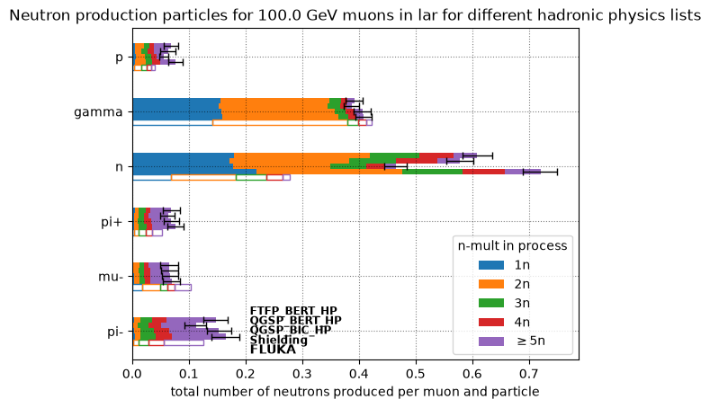
Figure: Muon induced neutron production processes for different hadronic physics lists at 100 GeV in liquid argon.
Note
A caveat regarding inelastic neutron interactions is that in Geant4 the incoming neutron track is terminated at these interactions and replaced by one or more new outgoing neutron tracks with new track IDs. To avoid double counting, the number of outgoing neutrons in these interactions is reduced by one. This correction has already been applied in the results shown here.
Neutron production processes¶
In addition to comparing hadronic physics lists, it is also interesting to look at the individual contribution of the different incoming particles for different material. The following plots show the individual contributions for the Shielding physics list for liquid argon (first) and water (second) at 100 GeV, as well as for liquid argon at 280 GeV (third).
Compared to liquid argon, in water, the neutron production is less dominantly driven by photonuclear interactions and neutron inelastic interactions, and is more evenly distributed. Conversely, at higher energies, in liquid argon, the contributions from neutron inelastic interactions and photonuclear interactions become even more dominant.
{kind=link}
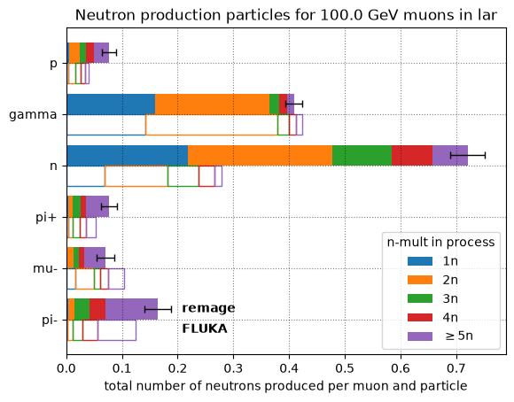
Figure: Muon induced neutron production processes in liquid argon at 100 GeV.
{kind=link}
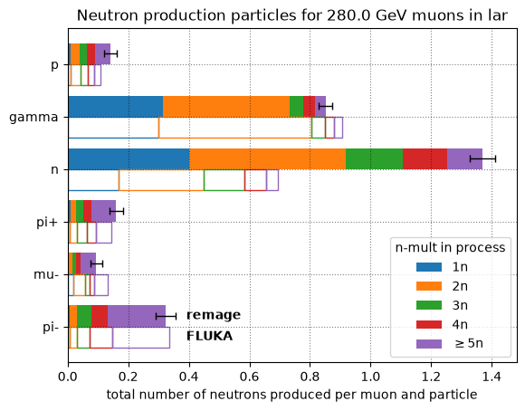
Figure: Muon induced neutron production processes in water at 100 GeV.
Figure: Muon induced neutron production processes in liquid argon at 280 GeV.
3.) Isotope production¶
While the production of \(^{77}\)Ge in LEGEND is driven by neutron capture on \(^{76}\)Ge and thus depends on the neutron yield, it is also important to understand the production of other isotopes via spallation processes. To this end, using the simulations performed in 2.), the production yield per muon was calculated for all isotopes produced in the showers in liquid argon and enriched germanium at 100 GeV. The following plots show heatmaps of the isotope production yield for the two materials in remage and FLUKA, as well as a relative comparison between the two. Isotopes identified as potential background sources in LEGEND are highlighted in the plots and their production yields separately plotted below. In general, the isotope production yields should be consistent between remage and FLUKA up to a factor of 2x for the isotopes of interest, i.e., the potential background isotopes. In general, the remage estimates show slight overproduction compared to FLUKA.
{kind=link}
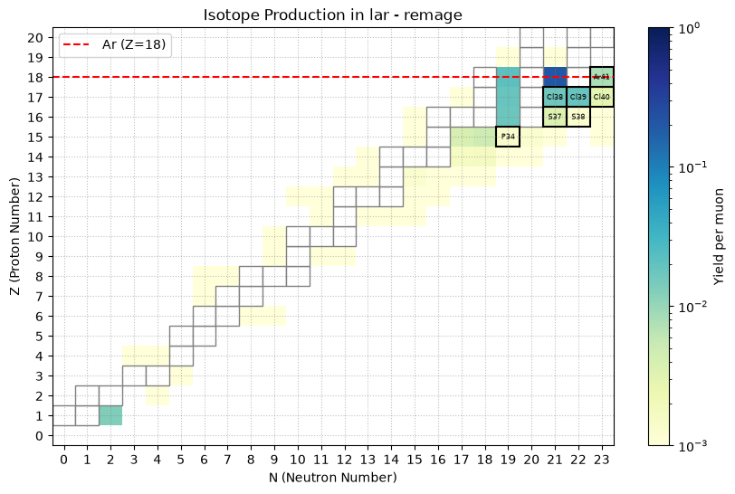
Figure: Muon induced isotope production in liquid argon at 100 GeV in remage.
{kind=link}
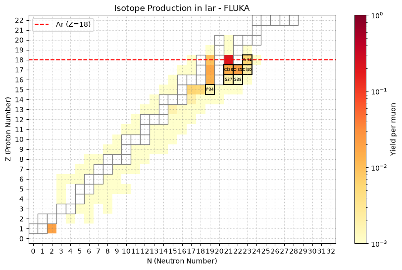
Figure: Muon induced isotope production in liquid argon at 100 GeV in FLUKA.
{kind=link}
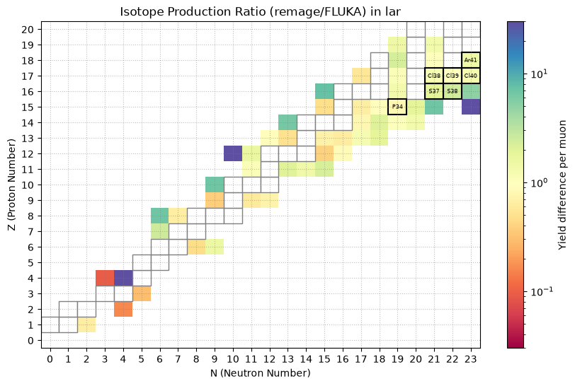
Figure: Relative isotope production in liquid argon at 100 GeV in remage / FLUKA.
{kind=link}
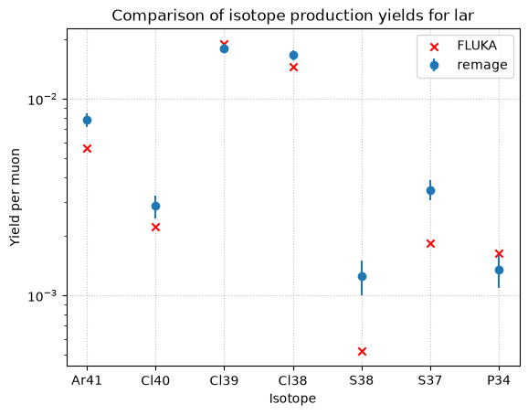
Figure: Comparison for relevant isotopes in liquid argon at 100 GeV in remage and FLUKA.
{kind=link}
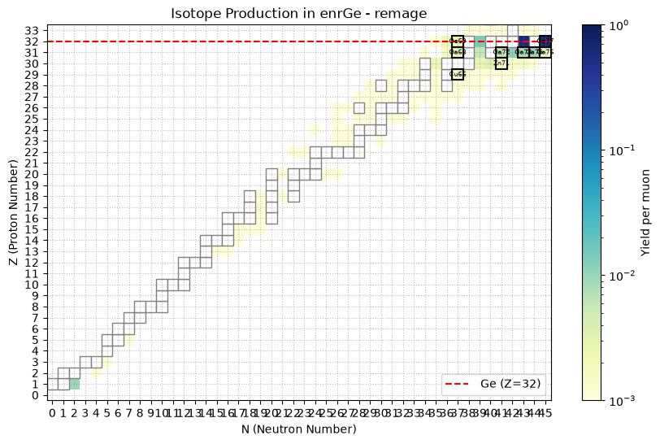
Figure: Muon induced isotope production in enriched germanium at 100 GeV in remage.
{kind=link}
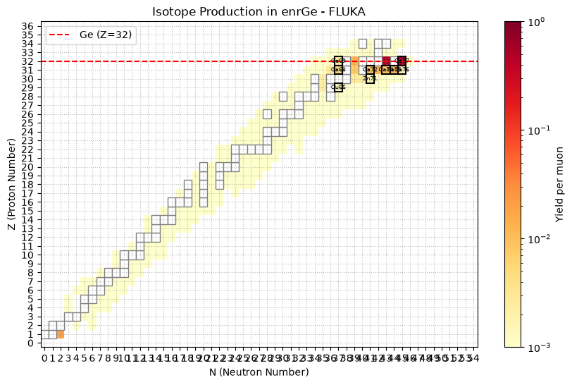
Figure: Muon induced isotope production in enriched germanium at 100 GeV in FLUKA.
{kind=link}
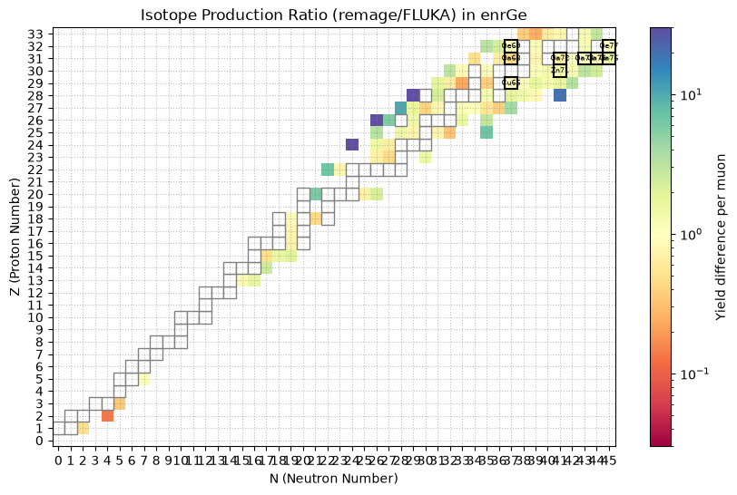
Figure: Relative isotope production in enriched germanium at 100 GeV in remage / FLUKA.
{kind=link}
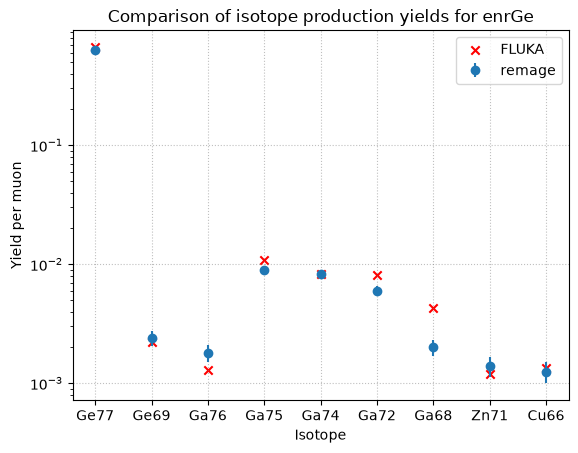
Figure: Comparison for relevant isotopes in enriched germanium at 100 GeV in remage and FLUKA.
4.) Muon shower dimensions¶
To compare muon shower physics across materials, it is useful to study the development of the shower profile as a function of penetration depth.
First, it is important to estimate the “burn-in” depth at which the muon showers have fully developed, i.e., the average particle flux and thus the average energy deposition along the penetration depth stabilize. This is relevant because, in deep-underground simulations, it is desirable to propagate muons through the surrounding rock only as far as needed. The minimum simulation depth is therefore set by the burn-in depth, after which the resulting particle flux in the cavern no longer changes significantly. Since neutrons are the most relevant particles for LEGEND, we also evaluate neutron production locations along the depth.
The following plots were generated by summing all simulated muon events in both the energy and neutron production profiles. The energy envelope is defined as the radius from the beam axis that contains 99.5% of the total energy deposited at each depth. The neutron production profile shows the locations of all generated neutrons in the simulations as a function of depth and radius from the beam axis.
The shower stabilization depth was estimated as follows: the individual energy envelope points were plotted in a histogram according to their radius from the beam axis. The mode and FWHM parameters were extracted to estimate the stabilized shower width. Based on this, the first energy envelope point above the threshold (mode - FWHM/2.335) was assumed to be the depth at which the shower stabilizes. This metric is somewhat arbitrary and prone to statistical fluctuations, but it is sufficiently robust for the purpose of this validation.
To the author’s knowledge, there are no direct experimental measurements of this burn-in depth or of the detailed neutron production profile. However, previous estimates from stable versions of remage indicate that the burn-in depth at 100 GeV should be roughly 3-4 m in water, 1-2 m in liquid argon, and 1 m in rock. The estimated burn-in depth should be consistent across both the energy containment envelope and the neutron production profile.
A second point of interest is the width of the average shower after stabilization. This parameter, like the burn-in depth, is material-dependent and can signal changes in the underlying physics models if it shifts suddenly between Geant4/remage versions. The stabilized width should be roughly 40 cm in water, 30 cm in liquid argon, and 20 cm in rock.
{kind=link}
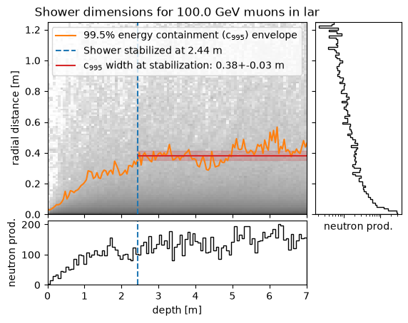
Figure: Muon shower profile in liquid argon at 100 GeV.
{kind=link}
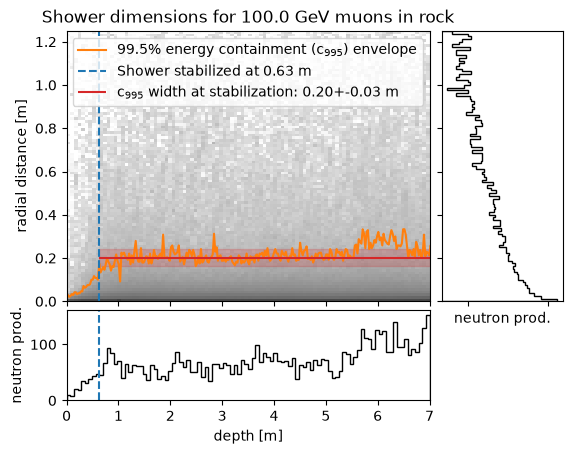
Figure: Muon shower profile in rock at 100 GeV.
{kind=link}
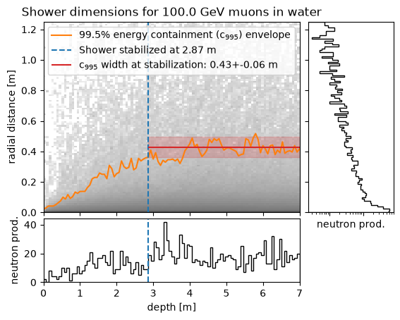
Figure: Muon shower profile in water at 100 GeV.
Note
The burn-in depth also depends on energy. Considering the wide muon energy range up to several TeV, it is recommended to use burn-in depths of up to ~3 m in rock. More thorough estimates should be added here in the future.